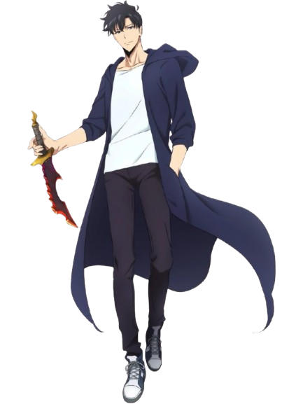
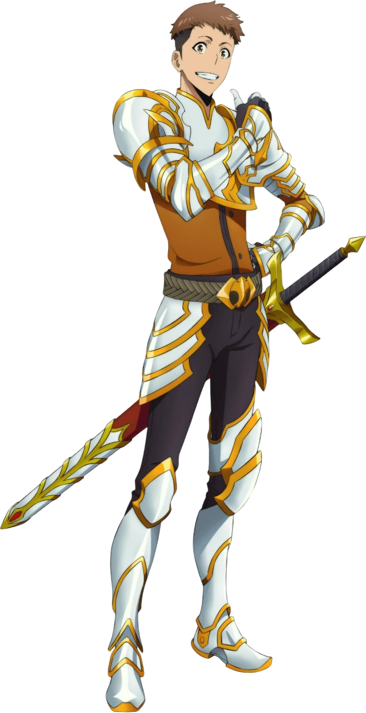

Sung Jin Woo
Song Jin-Woo é apresentado como um caçador inicialmente fraco, conhecido como o “mais fraco de todos”, mas sua vida muda quando recebe um misterioso sistema que aumenta seu poder após cada batalha. Ao longo da história, ele evolui de alguém subestimado para um dos seres mais fortes do mundo, enfrentando monstros, governantes e sombras enquanto carrega o peso de proteger aqueles que ama. Sua jornada é marcada por superação, estratégia e uma transformação que redefine completamente seu destino.

Han Song-Yi
Han Song-Yi aparece como uma caçadora iniciante que tenta sobreviver em meio a desafios maiores do que sua experiência permite. Ao conviver com Jin-Woo, encontra coragem para seguir em frente e aprender com cada batalha. Sua trajetória mostra como determinação e adaptação podem transformar alguém que antes era subestimado.

Yoo Jinho
Yoo Jinho surge como um aliado leal que acompanha Jin-Woo mesmo quando as diferenças de poder entre eles são enormes. Com sua personalidade sincera e disposição para enfrentar perigos ao lado do amigo, ele demonstra que confiança e companheirismo também moldam grandes jornadas. Sua presença reforça o valor das relações em um mundo cheio de ameaças.

Choi Jong-In
Choi Jong-In é reconhecido como um dos magos mais talentosos e influentes do país, liderando sua guilda com força e estratégia. Ao perceber o crescimento de Jin-Woo, passa a observá-lo com respeito e interesse, entendendo que sua ascensão muda o equilíbrio entre os caçadores. Sua figura representa poder, experiência e o impacto das grandes mudanças no cenário das guildas.